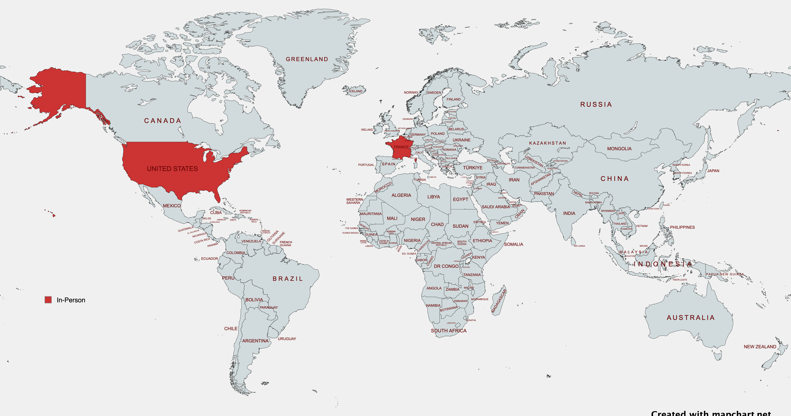

Talks
In-person events:

2024
4 Reliability Anti-Patterns (ConFoo 2024 conference)
Tags: #reliability #sre
Slides:
⭐ Selected as top 1 talk of the conference
I Completed All 9 Advents of Code: Lessons Learned (ConFoo 2024 conference)
Tags: #coding
Slides:
4 Common Go Mistakes (Golang Insiders meetup)
Tags: #golang
Slides:
2023
Google, Tech, and Go with Teiva Harsanyi (Ardan Labs podcast with Bill Kennedy)
Tags: #golang #career
3 Reliability Anti-Patterns (SRE France meetup)
Tags: #reliability # sre
Slides:
Running a Go App in Kubernetes: CPU Impacts (P99 Conf online conference)
Tags: #golang #kubernetes #performance
- Slides:
-
Video (registration required)
3 Erreurs Courantes en Go (Golang Paris meetup)
Tags: #golang
-
Slides:
2021
How to Make Mistakes in Go (Go Time podcast - Episode #190)
Tags: #golang #career
2020
Mechanical Sympathy in Go (GopherCon Turkey 2020 online conference)
Tags: #golang #cpu #memory #performance
-
Slides: